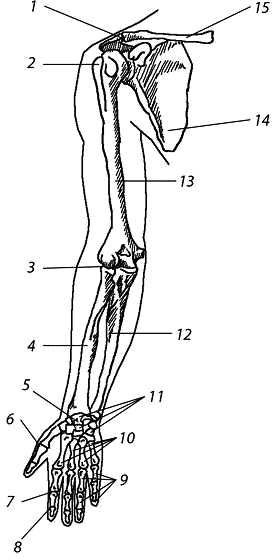

Глава 6. Кости верхней конечности
Скелет верхних конечностей состоит из плечевого пояса и скелета свободных верхних конечностей (рук). В состав плечевого пояса входят две пары костей – ключица и лопатка. К костям свободной верхней конечности относятся плечевая кость, кости предплечья и кости кисти. Кости кисти в свою очередь подразделяются на кости запястья, пясти и фаланги пальцев.

Рис 6.1 Кости верхней конечности: 1 – акромиально–ключичное сочленение; 2 – плечевой сустав; 3 – локтевой сустав; 4 – лучевая кость; 5 – лучезапястный сустав; 6 – пястно–фаланговый сустав; 7 – проксимальный межфаланговый сустав; 8 – дистальный межфаланговый сустав; 9 – фаланги пальцев; 10 – пястные кости; 11 – кости запястья; 12 – локтевая кость; 13 – плечевая кость; 14 – лопатка; 15 – ключица
Ключица (clavicula) – S–образно изогнутая парная кость, имеющая тело и два конца – грудинный и акромиальный. Грудинный конец утолщён и соединяется с рукояткой грудины. Акромиальный конец уплощён, соединяется с акромионом лопатки. Латеральная часть ключицы выпуклостью обращена назад, а медиальная – вперёд.
Лопатка (scapula) – плоская кость, на которой различают две поверхности (рёберная и дорсальная), три края (верхний, медиальный и латеральный) и три угла (латеральный, верхний и нижний). Латеральный угол утолщён, на нём имеется суставная впадина для сочленения с плечевой костью. Выше суставной впадины располагается клювовидный отросток. Рёберная поверхность лопатки слегка вогнута и называется подлопаточной ямкой; от неё начинается одноимённая мышца. Дорсальная поверхность лопатки разделена остью лопатки на две ямки – надостную и подостную, в которых лежат одноимённые мышцы. Ость лопатки заканчивается выступом – акромионом (плечевой отросток). На нём имеется суставная поверхность для сочленения с ключицей.
Плечевая кость (humerus) – длинная трубчатая кость, состоит из тела (диафиза) и двух концов (эпифизов). На проксимальном конце имеется головка, отделённая от остальной кости анатомической шейкой. Ниже анатомической шейки с наружной стороны расположены два возвышения: большой и малый бугорки, разделённые межбугорковой бороздой. Дистальнее бугорков находится слегка суженный участок кости – хирургическая шейка. Такое название обусловлено тем, что переломы кости происходят чаще в этом месте.
Верхняя часть тела плечевой кости имеет цилиндрическую форму, а нижняя – трёхгранную. В средней трети тела плечевой кости сзади спирально проходит борозда лучевого нерва. Дистальный конец кости утолщён и носит название мыщелка плечевой кости. По бокам он имеет выступы – медиальный и латеральный надмыщелки, а снизу расположены головка мыщелка плечевой кости для соединения с лучевой костью и блок плечевой кости для сочленения с локтевой костью. Над блоком спереди находится венечная ямка, а сзади – более глубокая ямка локтевого отростка (в них заходят одноимённые отростки локтевой кости).
Кости предплечья: лучевая расположена латерально, локтевая занимает медиальное положение. Они относятся к длинным трубчатым костям.
Лучевая кость (radius) состоит из тела и двух концов. На проксимальном конце расположена головка, а на ней – суставная ямка, с помощью которой лучевая кость сочленяется с головкой мыщелка плечевой кости. На головке лучевой кости имеется также суставная окружность для соединения с локтевой костью. Ниже головки находится шейка, а под ней – бугристость лучевой кости. На теле различают три поверхности и три края. Острый край обращён к такому же по форме краю локтевой кости и называется межкостным. На дистальном расширенном конце лучевой кости имеются запястная суставная поверхность (для сочленения с проксимальным рядом костей запястья) и локтевая вырезка (для сочленения с локтевой костью). Снаружи на дистальном конце расположен шиловидный отросток.
Локтевая кость (ulna) состоит из тела и двух концов. На утолщённом проксимальном конце имеются венечный и локтевой отростки; ими ограничена блоковидная вырезка. С латеральной стороны у основания венечного отростка находится лучевая вырезка. Ниже венечного отростка имеется бугристость локтевой кости.
Тело кости трехгранной формы, и на нём различают три поверхности и три края. Дистальный конец образует головку локтевой кости. Поверхность головки, обращенная к лучевой кости, закруглена; на ней расположена суставная окружность для соединения с вырезкой этой кости. С медиальной стороны от головки отходит вниз шиловидный отросток.
Кости кисти разделяются на кости запястья, пястные кости и фаланги (пальцев).
Кости запястья – ossa carpi (carpalia) расположены в два ряда. Проксимальный ряд составляют (в направлении от лучевой кости к локтевой) ладьевидная, полулунная, трёхгранная, гороховидная кости. Первые три дугообразно изогнуты, образуют эллипсовидную поверхность для соединения с лучевой костью. Дистальный ряд образуют следующие кости: кость–трапеция, трапециевидная, головчатая и крючковидная.
Кости запястья лежат не в одной плоскости: с тыльной стороны они образуют выпуклость, а с ладонной – вогнутость в виде желоба – борозду запястья. Эта борозда углубляется медиально расположенной гороховидной костью и крючком крючковидной кости, латерально – бугорком кости–трапеции.
Пястные кости в количестве пяти являются короткими трубчатыми костями. В каждой из них различают основание, тело и головку. Счёт костей ведётся со стороны большого пальца: I, II и т. д.
Фаланги пальцев относятся к трубчатым костям. Большой палец имеет две фаланги: проксимальную и дистальную. У каждого из остальных пальцев по три фаланги: проксимальная, средняя и дистальная. Каждая фаланга имеет основание, тело и головку.